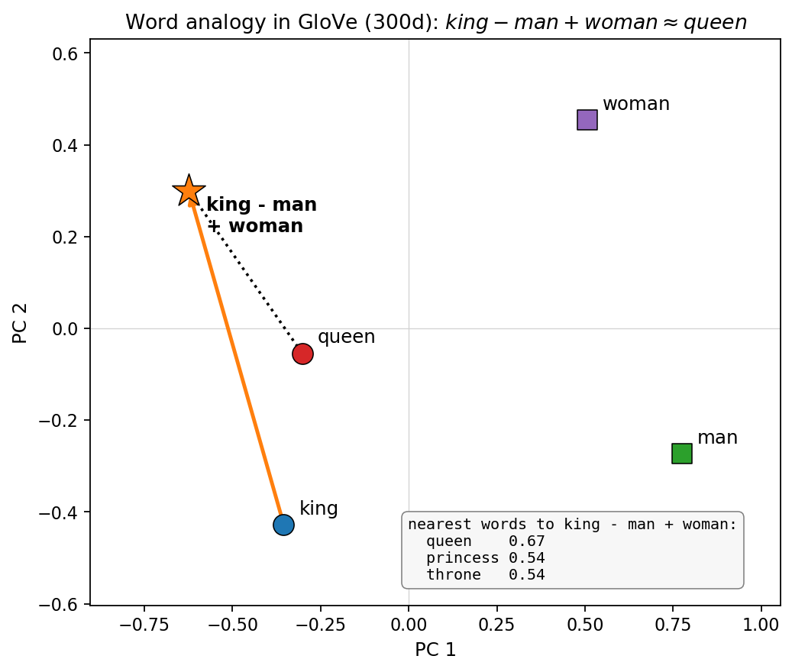

Large Language Models in Finance · Practical Session 1
From Text to Vectors — Hands On
TF-IDF by hand, cosine similarity, embedding analogies, and Python on real earnings calls.
Juan F. Imbet · Paris Dauphine – PSL University
Summer school · math one click away — press m or click ⚙ "Under the hood"
Session overview
One hour, five things you'll actually do
Guided problems first, then a short Python case study, and a bonus API exercise. Try each problem before you reveal the solution.
5'
Recap — the key formulas
15'
Problem 1 — TF-IDF by hand
10'
Problem 2 — embedding analogies
20'
Case study — Python on earnings calls
5'
Discussion — BoW vs. embeddings
5'
Solutions — walkthrough
Notebook
Work in code/notebooks/01-intro/practical.ipynb — open it before we start.
01
Recap — the formulas we'll lean on
Five minutes to reload TF-IDF and Word2Vec before we compute anything.
Recap · counting, weighted
TF-IDF rewards words that are frequent here but rare everywhere
Two moves: count how often a word shows up in a document, then discount words that show up in every document.
Word in all documents ⇒ IDF = 0 (suppressed — it tells you nothing)
Word in one document ⇒ IDF = ln N (maximally discriminative)
TF-IDF picks out words frequent in a document but rare in the corpus
Recap · meaning as geometry
Word2Vec: predict the neighbors, and analogies fall out
Train a model to guess the words around a target word. To do it well, it must place related words near each other — and that arrangement is the embedding.
Only \(K{+}1\) embedding rows update per step (vs. all \(V\) for full softmax)
Positive context vectors are pulled toward the centre word; random "noise" words are pushed away
Linear analogies emerge: \(\hat{\mathbf{v}}_{\text{king}}-\hat{\mathbf{v}}_{\text{man}}+\hat{\mathbf{v}}_{\text{woman}}\approx\hat{\mathbf{v}}_{\text{queen}}\) (cosine similarity 0.67 in GloVe-300)

Figure. The word analogy \(\hat{\mathbf{v}}_{\text{king}} - \hat{\mathbf{v}}_{\text{man}} + \hat{\mathbf{v}}_{\text{woman}} \approx \hat{\mathbf{v}}_{\text{queen}}\), visualised in 2D via PCA of real GloVe-300 vectors.
The orange arrow is the vector arithmetic; the dotted line shows the result landing next to queen.
Source: author calculations; see gen_king_analogy.py in code/notebooks/01-intro/.
02
Problem 1 — TF-IDF by hand
Four earnings-call snippets, one vocabulary, and a cosine similarity you can compute on paper.
Problem 1 · the data
Four snippets, lower-cased and stripped of stop words
After removing the stop words {the, a, of, in, by, is, our, we, to, and}, each snippet is exactly five tokens.
Work it through — individually or in pairs (15 min)
Compute \(\mathrm{tf}(v,d)\) for each token and document. Hint: 5 tokens per doc, so \(\mathrm{tf}\in\{0,\,0.2\}\).
Compute \(\mathrm{df}(v,\mathcal{C})\) and \(\mathrm{idf}(v,\mathcal{C})=\ln(4/\mathrm{df}(v))\) for each word.
Compute \(\mathrm{tfidf}(v,d_1,\mathcal{C})\) and \(\mathrm{tfidf}(v,d_2,\mathcal{C})\) for all \(v\).
Compute \(\mathrm{sim}(d_1,d_2)\) using \(\ell_2\)-normalised TF-IDF vectors. Hint: only non-zero entries contribute to the dot product.
Interpret: which two documents are most similar? Does it match your intuition about their content?
attempt before you reveal
Try all five tasks first — the full solution is in Section 05.
03
Problem 2 — word embedding analogies
Arithmetic on meaning: what does bond − coupon + dividend point to?
Problem 2 · the puzzle
Fill in the blank with vector arithmetic
Imagine a Word2Vec model trained on a large corpus of earnings-call transcripts. It has learned these approximate relationships in embedding space — what completes each one?
Analogy
Result \(\approx\) ?
bond − coupon + dividend
?
long − profit + loss
?
inflation − high + low
?
Tasks (10 min — discuss with a neighbour)
For each row, predict the missing word and explain the financial reasoning.
Explain why these linear relationships emerge from the skip-gram objective.
Give an analogy that would fail or produce nonsense, and explain why.
04
Case study — Python on earnings calls
Let scikit-learn do the counting on five real Q3-2023 snippets, then read the similarity matrix.
Case study · the goal
Find the most similar pair of earnings-call snippets
Use scikit-learn to build TF-IDF vectors for five real snippets and rank them by cosine similarity — no hand arithmetic this time.
Five snippets from Q3 2023 earnings calls (provided in the notebook)
Apply TfidfVectorizer with stop_words='english', max_features=500
Compute the pairwise cosine-similarity matrix
Identify and interpret the most- and least-similar pairs
Run it
Open code/notebooks/01-intro/practical.ipynb and run cells 1–4.
Case study · the code
The whole pipeline is a dozen lines
from sklearn.feature_extraction.text import TfidfVectorizer
from sklearn.metrics.pairwise import cosine_similarity
import numpy as np
# snippets: list of 5 earnings call excerpt strings
vectorizer = TfidfVectorizer(stop_words='english',
max_features=500)
X = vectorizer.fit_transform(snippets) # (5, 500) sparse matrix
# Pairwise cosine similarity
sim_matrix = cosine_similarity(X)
np.fill_diagonal(sim_matrix, 0) # zero out self-similarity
# Most similar pair
i, j = np.unravel_index(sim_matrix.argmax(), sim_matrix.shape)
print(f"Most similar: doc {i} and doc {j}, sim = {sim_matrix[i,j]:.3f}")
# Top terms for doc i
feature_names = vectorizer.get_feature_names_out()
top_terms = feature_names[X[i].toarray().argsort()[0, -5:]]
print(f"Top terms for doc {i}: {top_terms}")
Case study · interpret
Questions to answer after running the notebook
Highest similarity: which pair scores highest? What do their top TF-IDF terms have in common?
Cross-company surprise: two docs from different companies score higher than two from the same company in different sectors. How can that happen?
Vocabulary sensitivity: change max_features from 500 to 50. Does the most-similar ranking change? What does that say about TF-IDF and vocabulary truncation?
a hint for Q2
TF-IDF matches vocabulary, not topic. Two firms using the same boilerplate language can look closer than two firms discussing genuinely different businesses.
A stretch extension comparing TF-IDF with averaged GloVe embeddings appears in the appendix.
Discussion
When would you reach for BoW, and when for embeddings?
The central trade-off
TF-IDF is interpretable, fast, and needs no pre-training. Word embeddings are dense and semantically rich — but they are black-box vectors.
Discuss in groups (5 min):
Building a system to flag unusually negative 10-K filings — TF-IDF + LM dictionary, or embeddings? Justify.
Retrieving every call that discusses supply-chain risk from 500,000 transcripts — which method?
An auditor wants the system to explain why a filing was flagged — which is easier to explain?
Under what conditions might TF-IDF actually outperform embeddings in a return-prediction task?
05
Solutions — the walkthrough
Reveal only after you've had a real attempt.
Solution · Problem 1
The discriminative words win, and \(d_2\)–\(d_4\) are the closest pair
With \(N=4\), a word in one doc has \(\mathrm{idf}=\ln 4\approx1.386\); a word in two docs has \(\mathrm{idf}=\ln 2\approx0.693\). Every \(\mathrm{tf}=0.2\).
Headline answers
\(\mathrm{sim}(d_1,d_2)\approx 0.21\) — they share only margin
Most similar pair: \(d_2\) and \(d_4\) — they share uncertainty, pressure, growth
Solution · Problem 2
Each analogy swaps one financial dimension
bond − coupon + dividend \(\approx\) equity A bond pays coupons; equity pays dividends. Subtracting the income-type isolates the instrument.
long − profit + loss \(\approx\) short A long position profits from price rises; a short profits from falls — i.e. what is a loss for a long.
inflation − high + low \(\approx\) deflation A directional flip along the macro-price dimension.
Wrap-up
What you take away — and where Lecture 2 goes
This session
TF-IDF: fast, interpretable, order-invariant
Cosine similarity is just normalised overlap of discriminative words
Word2Vec/GloVe: semantic geometry and linear analogies (king → queen)
Domain adaptation matters — "risk" means something different on Wall Street
the bigger picture
Both TF-IDF and Word2Vec give every word a single, static vector. Next lecture: Transformers
learn context-dependent embeddings — the same word gets a different vector depending on
the sentence around it.
A
Appendix — stretch problem
Optional: pit TF-IDF against averaged GloVe embeddings.
Appendix · stretch
Does an embedding-based ranking agree with TF-IDF?
Optional extension: load glove-wiki-gigaword-100 via gensim and, for each document, compute the average word embedding.
Does the embedding-based similarity ranking agree with the TF-IDF ranking?
What does any disagreement tell you about what each representation captures?
When would you trust the embedding ranking over TF-IDF — and vice versa?
the point of the exercise
TF-IDF agrees when documents share exact words; averaged embeddings agree when they share meaning.
Disagreement is exactly where synonyms and paraphrase live.